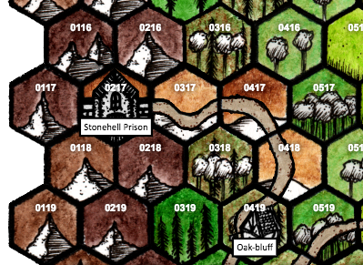

Oak-bluff village and Stonehell prison¶
Oak-bluff village is one of the largest villages near Eagle Pass that has a mixed population, with only a few Imperial citizens. The countryside to the north east of the road running past Oak-bluff is sparsely opulated with farmers, hunters, wood-cutters and so on. To the north west of the village and Oak-bluff are wild hills and sharp mountain reaches. It is widely known in the are that these areas are not safe, and any law-abiding population has long since been run out of the area by bandits, beast-folk, and horrid tales of the terrors in and around Sthonehell Prison.
Travel in the region¶
The only easy travel in the region is along the imperial road that goes through Oak-bluff village towards Stonhell Prison.
Mountains. Mountain hexes along the edge of the map, next to Stonehell Prison, and those surrounded by mountain hexes, are generally impassable for travel through them, but those with climbing equipment and specialized knowledge of the area may be able to find slow ways through the hexes.
Mountain hexes next to forest hexes are very difficult terrain; a full day’s travel can get through them.
Forest. Forest hexes are generally difficult terrain, especially those with hills in them, and require a half day’s travel to pass through.
Road. The road through the region is a well-built, imperial road, with stone quarried from the mountains around Eagle Pass.
Notable hexes¶
0217. Stonehell Prison – Under Emperor Darius the Just, Stonehell was used as a prison on the far edge of the empire, to receive all manner of undesirables and criminal nasties, whether truly guilty or not. After Darius’ removal, an Imperial task group carried out a liberation and strategic shut-down of the Stonehell facility. What the force found there was unpleasant and rarely talked about. No-one has gone there in decades; nobody would dare.
- For more information, see Michael Curtis’ Stonehell Dungeon series
0218. Brigand caves – The Ghost Beggars brigand gang, led by Zorrel Gnast, found a cave complex high up in the foothills of the mountains a few months ago, and have moved in, making it their headquarters. Because the caves are easy to defend, they don’t take a great deal of care to hide their tracks; anyone taking reasonable care can track them here from their bivuac in hex 0318. The Ghost Beggars themselves protect the caves, but they also have several mastiffs and even a sizeable monitor lizard to protect their hideout.
- For more information, see Michael Curtis’ Stonehell Dungeon Supplement One.
0318. Brigand bivuac – The Ghost Beggars maintain a regular camp in the wooded hills here, because of its proximity to the long stretch of impderial road running between Oak-bluff and the abandoned, Stonehell prison. While no one to speak of travels to the prison these days (other than ne’er-do-wells and beastmen), the road is used by nearly everyone in the region to travel to and from the Oak-bluff markets: its presence means that farmers and crafters from a wider than characteristic area can participate in the market. This makes the brigands reasonably wealthy, and a danger that locals would like to see dealt with.
0419. Oak-bluff village – Small pallisaded farming village, population about a hundred. Most of the population in the village and the farmsteads around it are not imperials, but native barbarians. Some of them are friendly to imperial citizens, but there is an under-current of resentment here; young farmers with too much ale in their bellies would be prone to start something if provoked. The village has a weekly market, and all the fundamental crafters. The village is technically governed by the legate at Eagle Pass, but in prartical terms, the Empire has almost no active presence here, and the village is run in the traditional native manner, by a counsel of elders.
0517. Pearce’s Corners – A cluster of farms, the principle one owned by the Pearce family (Peran and his wife Melloney). Peran keeps sheep and has a small orchard; he regularly shops wool and fruit in Oak-bluff. He and his farmer neighbours have been victimized by the Ghost Beggars bandit gang.